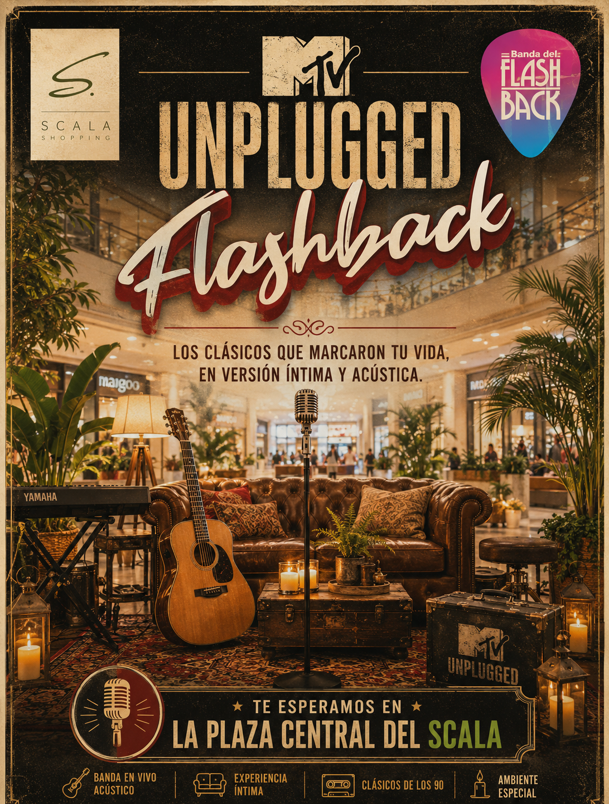

Septiembre 2026
MTV Unplugged
MTV Unplugged
Flashback
Experiencia 01 · Cantante masculino · rango medio
Una sesión íntima con clásicos reinterpretados.
Inspirada en los grandes acústicos de los 90s y 00s. El show debe sentirse como una grabación especial: cálido, emocional, cercano y con estética premium. El repertorio evita exigir registros demasiado agudos, se concentra en clásicos internacionales y permite adaptar tonos para una voz masculina media.
Íntimo
Nostálgico
Premium
Pop rock acústico
Dirección visual
PaletaBeige, negro, cuero, madera, dorado envejecido y rojo vino.
EscenaLounge acústico con sofá de cuero, alfombra persa, micrófono central, guitarra, teclado, plantas y detalles vintage.
VestuarioNegro, denim oscuro, cuero o chaqueta sobria; estética de sesión musical premium.
Frase guíaLos clásicos que marcaron tu vida, en versión íntima y acústica.
EscenaGuitarra como protagonista, luz cenital, textura de poster musical y grano vintage.
VestuarioNegro, denim oscuro, chaqueta liviana, estética relajada de concierto acústico.
Frase guíaLos clásicos que marcaron tu vida, en una versión íntima y acústica.